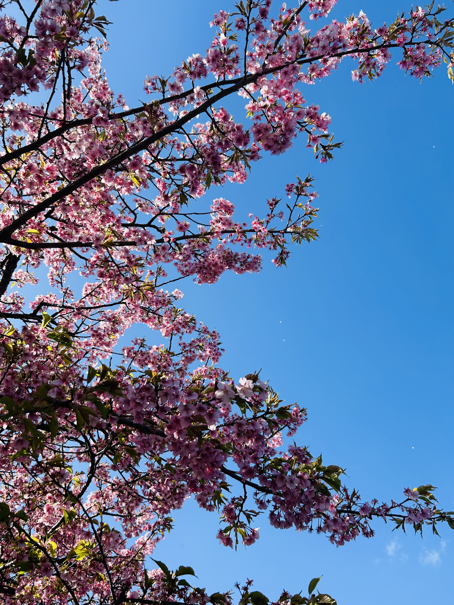
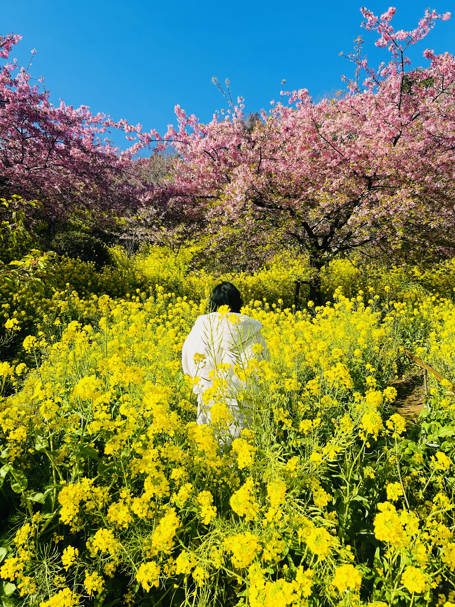
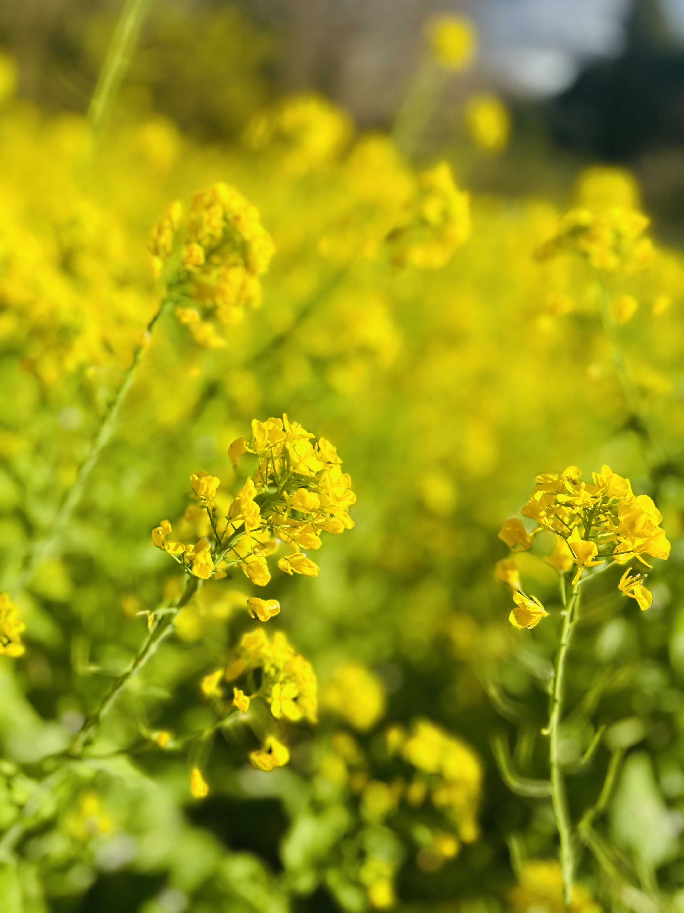
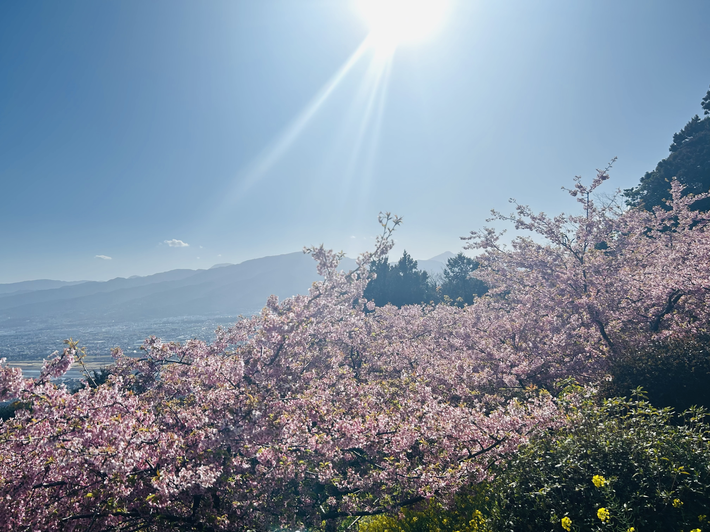
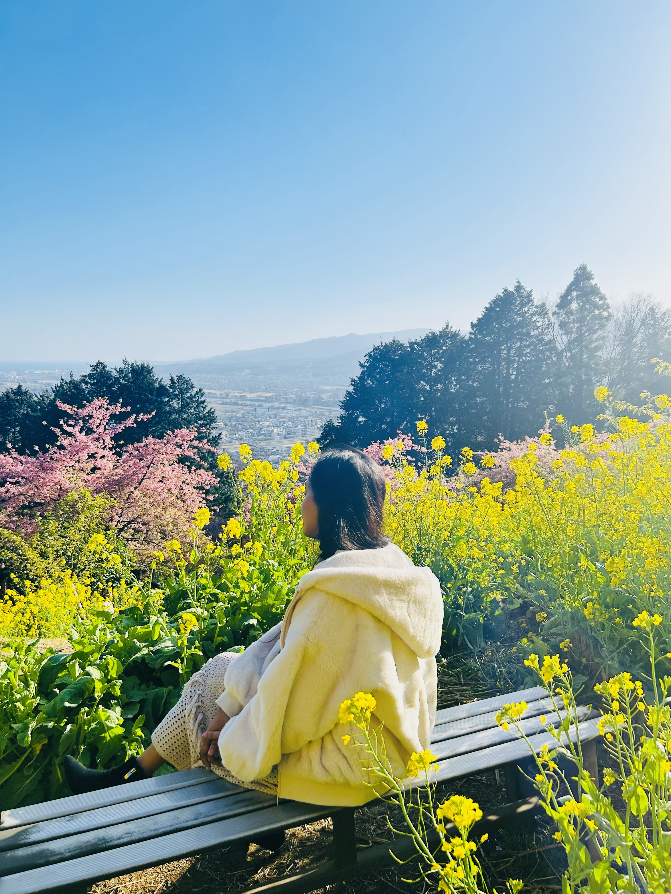
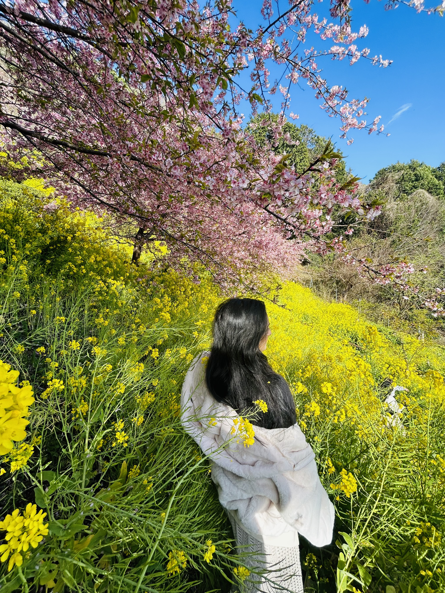

A Springtime Experience
Visiting Matsuda during the Kawazu Sakura season feels like stepping into a soft pink dream. Unlike regular cherry blossoms, Kawazu sakura bloom earlier, painting the hills of Kanagawa with vibrant shades of pink while winter quietly fades away. As you walk along the gentle slopes, petals float through the air, carried by the spring breeze, creating a calm and magical atmosphere. The contrast of bright blossoms against blue skies and distant mountains makes every moment peaceful, refreshing, and unforgettable. It is a perfect place to slow down, enjoy the warmth of early spring, and simply admire nature’s beauty.






As the day slowly comes to an end, the gentle pink petals continue to fall, reminding visitors that the beauty of Kawazu Sakura is fleeting yet deeply meaningful. Matsuda in spring is not just a place to see cherry blossoms, but a place to feel calm, breathe deeply, and appreciate the quiet moments of nature. Leaving with petals in the air and memories in the heart, it becomes a season you will always want to return to.